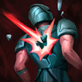

起手組件
 增幅典籍
增幅典籍直接提高 Q 技與魅惑後爆發，開局換血最直觀。
校正至 7.3f · 2026-11-13。Tier與配置是本站的模式策略判斷，不是官方勝率排名。
本站獨立邏輯複核：以既有手機版技能／裝備／符文資料與已整理的7.3f官方差異推演；本輪不採用外站評級、勝率或推薦配置。
單線五人戰重視消耗、清兵、開戰或保排；側線壓力與野區入侵優勢不直接計分，回血也不能假設抵銷全部消耗。
盧登回音 → 視界專注：前者提供第一輪技能清線和消耗，後者補接續主要作戰需求。以這條路線的輸出距離打團，死亡回補時再決定後續防護；沒有回城購物可補救每次換血。
死亡電刑：短時間三次獨立命中換取爆發，不把單發消耗當完整觸發。其餘選用凌虐、鎖鏈突擊、眼球收集器、燒灼，依本頁輸出方式與生存需求配套。
閃現＋光盾。保留位移／保命用途，避免為一輪消耗同時用掉全部防護。標準ARAM不套用打野重擊收益。
1 技 > 2 技 > 3 技。ARAM 開局三個基礎技能各點 1 級，之後主升 1 技、次升 2 技；大絕能點就點。
本站獨立邏輯複核：以既有手機版技能／裝備／符文資料與已整理的7.3f官方差異推演；本輪不採用外站評級、勝率或推薦配置。 完成策略與配置一致性複核，不等於全部技能逐級數值、傷害計算及所有特殊互動已實測；既有缺證項目仍保留。 標準ARAM倍率沿用既有記錄；賽勒斯倍率仍未確認。
起手組件 → 一階鞋或首件核心（依壓力調整）→ 核心成裝 → 鞋子升級 → 情境後續裝。五件成裝加一雙鞋；鞋子兩張圖表示升級前後，不是同時購買兩雙。
直接提高 Q 技與魅惑後爆發，開局換血最直觀。
遠距 Q 技很容易反覆觸發，提升整體磨血效率。
魅惑或遠距 Q 命中後能放大後續傷害與隊友跟進。

敵人被消耗到低血後，提高大絕與技能的收頭效率。

大量 AP 直接拉高整套爆發與被動回復。

中後期敵方開始堆魔抗時維持輸出。

前期補魔力、魔攻與法穿，讓高頻消耗更順。

阿璃：魔力之靴升級，提供法傷路線的穿透與續航；需按敵方魔防與生存壓力決定完成時機。

魅惑閃現、保命與補距離都很重要。

被強開時提高容錯，保留大絕做後續拉扯。

死亡電刑：短時間三次獨立命中換取爆發，不把單發消耗當完整觸發。

傷害行動受限的敵軍時，造成額外 10–45 真實傷害。
主動技能對敵方英雄造成傷害時施加標記，接下來對該英雄的 2 次普攻或主動技能造成額外適性傷害。

參與擊殺英雄或史詩級野怪後，獲得 1.5 物理攻擊或 3 魔法攻擊，最多疊加 8 層。

技能對敵方英雄造成傷害時使其燃燒，1 秒後造成 21–49 額外魔法傷害（隨等級）。
1 技 > 2 技 > 3 技
ARAM 開局三個基礎技能各點 1 級，之後主升 1 技、次升 2 技；大絕能點就點。
先用 Q 技穿過兵線磨血，魅惑留給走位失誤或隊友先控住的目標。不要為了打一套就把自己送進前排。
有兩件法裝後，利用大絕左右橫移找魅惑角度。第一段可以進場，但至少保留一段用來退回安全區。
團戰以側面威脅和收割為主。魅惑命中主力就集火，沒中則繼續拉扯，不要硬交完三段大絕。

敵方先手控制很多
需要先擋掉關鍵控制再找進場角度。
團戰時間偏長
需要更多持續輸出與續航時可替換爆發裝。
敵方提早堆魔抗
可提前到第三或第四件。
標準 ARAM 最後可追溯倍率：7.2 主要為阿璃視覺更新；目前本站未採用 AAA ARAM 專屬數值，標準 ARAM 先以通用基準呈現。 本輪核對至7.3e，未以符文大亂鬥倍率覆蓋；官方未提供本英雄完整新版倍率總表，若遊戲內不同以當局模式增益為準。
143位英雄的打法與路線條件複核；既有單卡分級與相容表保留其原有版本，不宣稱全部英雄×全部卡片重新實測或重評。
阿璃的優勢是大絕多段位移找魅惑角度；技能與身法最優先，迷霧回音能直接放大衝刺收益，控場與跑速則提高抓人與撤退穩定度。
魅惑提供抓人能力，大絕可調整輸出位置；第一輪沒命中時不宜硬追。 增幅先補本套缺少的進場、生存或輸出條件，再看上限；未取得卡面要求的觸發方式就不為它換掉核心。
7.3f：祕術拳擊每次普攻減冷卻提高到0.8秒；連鎖反應冷卻延長到25秒。隱霧反擊、流轉碎礫、移山者削弱；選擇時先看自身能否觸發，不把增幅改動套到標準ARAM。
核心
一、二技能與魅惑都是主要輸出手段，技能型增幅能穩定提供收益。
核心
大絕提供多段位移，是身法類增幅最容易反覆觸發的英雄之一。
高適配
多張卡會在衝刺後提供穿透、傷害、生存或冷卻，和阿璃大絕高度契合。
高適配
魅惑是抓人的核心，控場型增幅可以直接提高命中後的連鎖收益。
適配
技能暴擊、大絕雙放與投射技能加速等單卡能提高收割上限。
適配
額外跑速能配合大絕與魅惑角度，讓進退場更安全。
身法／迷霧／技能增幅多
盧登、視界專注與無限寶珠放大魅惑命中後的一套爆發。 本路線已同步7.3c的一般裝備；增幅專屬替換另依抽卡決定。
遠距 Q 技很容易反覆觸發，提升整體磨血效率。
魅惑或遠距 Q 命中後能放大後續傷害與隊友跟進。
敵人被消耗到低血後，提高大絕與技能的收頭效率。
大量 AP 直接拉高整套爆發與被動回復。
中後期敵方開始堆魔抗時維持輸出。
前期補魔力、魔攻與法穿，讓高頻消耗更順。
阿璃：魔力之靴升級，提供法傷路線的穿透與續航；需按敵方魔防與生存壓力決定完成時機。
需要反覆進出戰場
加入峽谷製造者提高長團輸出，利用多段大絕持續找角度。
遠距 Q 技很容易反覆觸發，提升整體磨血效率。
團戰時間偏長
需要更多持續輸出與續航時可替換爆發裝。
魅惑或遠距 Q 命中後能放大後續傷害與隊友跟進。
大量 AP 直接拉高整套爆發與被動回復。
中後期敵方開始堆魔抗時維持輸出。
前期補魔力、魔攻與法穿，讓高頻消耗更順。
阿璃：魔力之靴升級，提供法傷路線的穿透與續航；需按敵方魔防與生存壓力決定完成時機。
分類與單卡評級是本站條件式建議。新卡完整效果未核實時不補造數值；當局抽到的卡片會改變優先順序。
本站獨立邏輯複核：以既有手機版技能／裝備／符文資料與已整理的7.3f官方差異推演；本輪不採用外站評級、勝率或推薦配置。 完成策略與配置一致性複核，不等於全部技能逐級數值、傷害計算及所有特殊互動已實測；既有缺證項目仍保留。